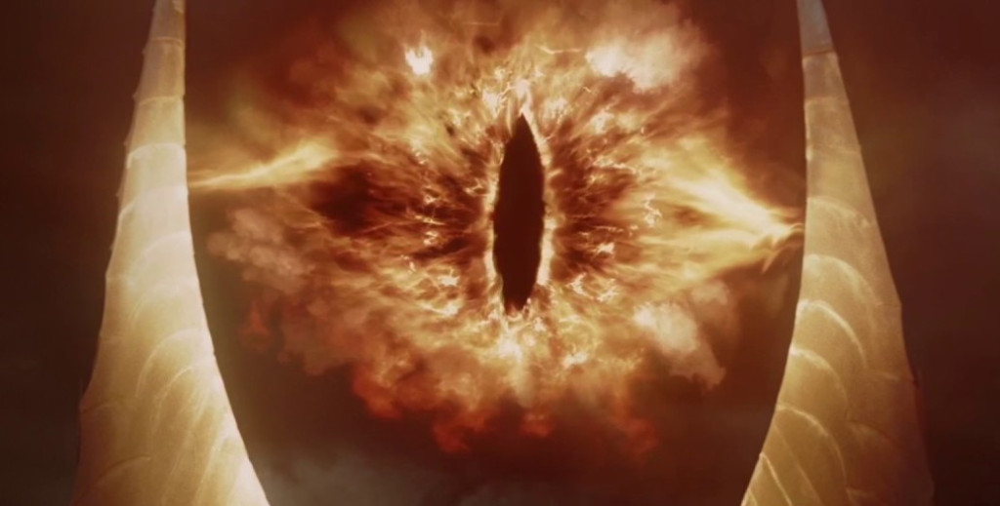

Ficha Pelicula
El Retorno del Rey

Ficha Tecnica
| Dirección | Peter Jackson |
|---|---|
| Producción |
Peter Jackson Barrie M. Osborne Fran Walsh |
| Guión |
Peter Jackson Fran Walsh Philippa Boyens |
| Basada en | La Comunidad del Anillo de J.R.R. Tolkien |
| Música | Howard Shore |
Otra Informacion
| País | Nueva Zelanda |
|---|---|
| Año |
Peter Jackson Barrie M. Osborne Fran Walsh |
| Guión |
Peter Jackson Fran Walsh Philippa Boyens |
| Basada en | La Comunidad del Anillo de J.R.R. Tolkien |
| Música | Howard Shore |
Pelicula
Información
El Señor de los Anillos: el retorno del Rey (título original en inglés: The Lord of the Rings: The Return of the King) es la tercera película de la trilogía cinematográfica de El Señor de los Anillos, dirigida por Peter Jackson y basada en la tercera parte de la obra de J. R. R. Tolkien, El Señor de los Anillos. Tuvo un presupuesto de 94 millones de dólares y fue rodada del 11 de octubre de 1999 al 22 de diciembre de 2000.
Trata sobre la última parte del viaje que emprendieron los nueve compañeros (de los cuales quedan solamente ocho) para salvar a la Tierra Media de la oscuridad impuesta por Sauron. En esta parte se decide el destino de todos los habitantes de estas tierras.
Los primeros dos filmes fueron El Señor de los Anillos: la Comunidad del Anillo y El Señor de los Anillos: las dos torres, aunque en esta película se incluyen algunos eventos del libro anterior: Las dos torres.
En una edición especial extendida se introdujeron nuevas escenas que ayudan a comprender mejor el contexto de la película y a cada uno de los personajes. Estas escenas se suprimieron en la versión original porque alargan demasiado la película y le restan dinamismo.
El Señor de los Anillos: el retorno del Rey está considerada una de las películas más grandes y exitosas en la historia del cine. En octubre de 2011, IMDb la colocó en el puesto 10 de las 250 mejores películas de la historia. El 29 de febrero de 2004, durante la ceremonia de los Premios Óscar, El retorno del Rey ganó los once Óscar a los que había sido nominada, convirtiéndose así en una de las tres películas en ganar todas las nominaciones (las otras dos son Gigi y El último emperador), y convirtiéndose también en una de las películas más premiadas de la historia, igualando en número de premios a Titanic y Ben-Hur.
En cuanto a recaudación, se colocó en su momento como la segunda película más taquillera de todos los tiempos, con una recaudación global de 1119 millones de dólares, únicamente por detrás de Titanic (1997) la cual había recaudado 1843 millones de dólares hasta ese momento. Posteriormente fue superada por Avatar (2009, 2782 mill.), The Avengers (2012, 1510 mill.) y Harry Potter y las Reliquias de la Muerte: parte 2 (2011, 1215 mill.), entre otras (si bien hay que tener en cuenta la inflación y el precio de taquilla).